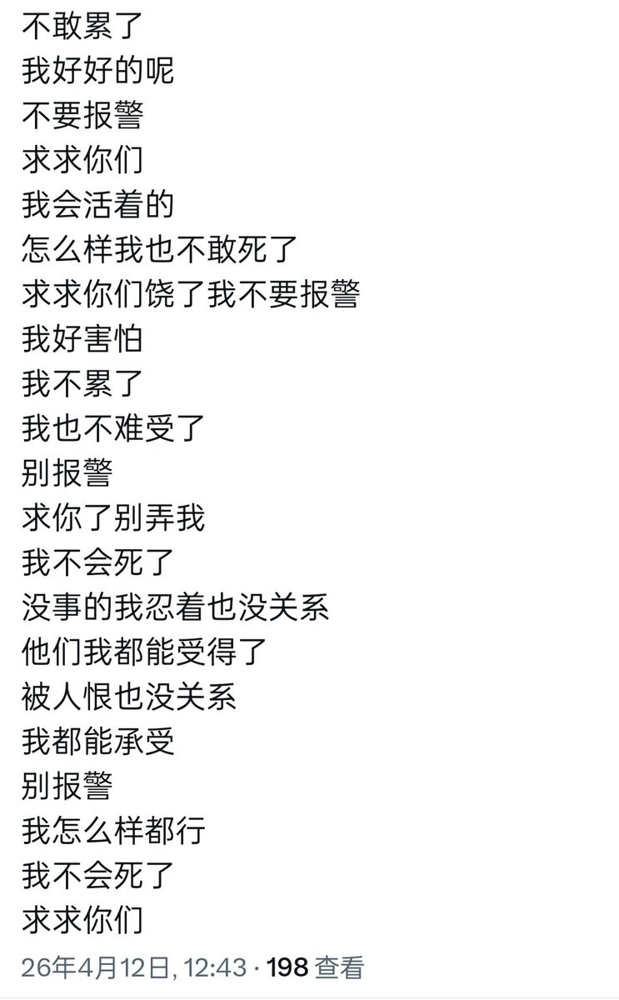

有一个问题我是不明白的。人到底有没有死亡的自由。当我们说死时，我们到底在追求什么。我是亲手送走了小遥的。回顾历史，包括我自己也隐隐约约有点不如意。但之前从来没有想过要死。我当时自己的解释是，有钱有闲有爱人。小遥面临的则是一个完全沦陷的国度，社交学校家庭几乎没有通畅的，唯一的求助方式是找人聊天。然后还在真正需要爱时被我玩砸了。加上他确实有多次相关经历，一下子靠着药物和精神痛苦服药自杀了——我的朋友告诉我其实他的死无关紧要，死个无关紧要的人让我装逼装到了还写上悼念诗了，如果药娘死绝了不要再上推特中文区都是牛牛和血图就好了——可以说他是已经谋划了很久了。至于我，也是选择了徐徐图之的死法。人都是很难立刻就要死的。因为没人想不明不白地死去。必然有一个思考的过程。如果在这个思考项目完成前得到了恰当的引导，可能就不会死。但如果在这个项目完成后，那么死亡就会到来。所以，死亡其实是一个人生的议题。自然极限可以将这个议题强制推送给我们，我们也可以通过研究这个议题主动走向自己的死亡。任何人有了自杀的念头哪怕不去做都是应该寻求帮助的。议题开始研究之日，死神就已经在路上了。等你想明白了这个议题，死神已经在你身后。
